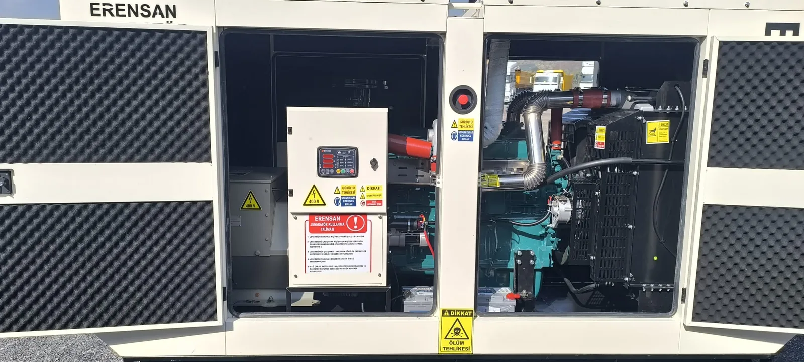

Satın alma veya kiralama görüşmelerinde sık sorulan sorulardan biri şudur: “Bu jeneratör saatte kaç litre yakar?” Cevap, yalnızca tankın yanındaki bir sayaçla verilmez. Aynı kVA değerindeki iki cihaz; yük profili, kabin tipi, bakımı ve ortamı farklıysa farklı tüketim gösterir. Bu yazı, Mersin’deki şantiye, sulama, fabrika ve işletme kullanımlarında yakıtı nasıl planlayacağınızı açıklar; tek bir litre rakamı uydurmaz.
Katalogdaki Tüketim Değeri Ne Anlama Gelir?
Üreticiler çoğu zaman yakıt tüketimini yüzde 50, 75 ve 100 yük gibi noktalarda litre/saat olarak yayımlar. Bu değerler, test koşullarında ve belirtilen yakıt, sıcaklık, irtifa ve güç faktörü varsayımlarıyla geçerlidir. Tesisinizdeki yük bu noktaların arasında gezinir; motor kalkışlarında kısa süre daha yüksek talep oluşabilir.
Bu nedenle teklifte “şu kadar litre yakar” ifadesi, cihazın güncel teknik föyündeki yük noktaları ve sizin yük listeniz birlikte okunmadan kesinleşmez. Farklı markaların föyünde aynı kVA için farklı sayılar görmek normaldir; motor ailesi, soğutma, fan kaybı ve emisyon donanımı tüketimi değiştirir.
1. Yük Oranı En Büyük Etkendir
Dizel motor, üzerindeki elektrik yükü arttıkça daha fazla yakıt harcar. Boşta veya çok düşük yükte çalışmak da verimsizdir: saatlik litre düşük görünebilir ama üretilen kWh başına tüketim kötüleşir, kurum ve yağ seyrelmesi riski artabilir. Aşırı yük ise hem tüketimi hem hararet ve arıza riskini yükseltir.
Doğru plan, jeneratörü sürekli yüzde 100’e yakın zorlamak değil; kritik yükleri gerçekçi sırayla beslemektir. Motor, pompa ve kompresör gibi kalkış yükleri kapasite hesabını etkiler. Bu hesap için kW ve kVA farkı ile sanayi tesisi kVA hesabı rehberlerimizi kullanabilirsiniz.
2. Çalışma Süresi ve Kullanım Şekli
Günde birkaç saat yedek güç ile sulama sezonunda 10–12 saat sürekli çalışma aynı yakıt organizasyonunu gerektirmez. Sürekli çalışmada depo hacmi, ikmal sıklığı, vardiya sorumlusu ve dökülme önlemi öne çıkar. Kısa süreli yedeklemede ise yakıtın tankta uzun süre beklemesi, su ve tortu riskini artırır.
| Kullanım | Yakıt planında öne çıkan konu |
|---|---|
| Yedek güç (kesinti) | Beklenen kesinti süresi, depo yeterliliği, yakıt yaşlanması |
| Şantiye / kiralık | Günlük çalışma saati, ikmal sorumlusu, teklif kapsamı |
| Tarımsal sulama | Pompa yükü, mevsim, uzak saha ikmali |
| Üretim hattı | Kritik yük sırası, vardiya, yedek yakıt stoku |
3. Bakım, Filtre ve Motor Durumu
Tıkalı hava veya yakıt filtresi, yanlış yağ, kaçak, zayıf enjektör ve ihmal edilmiş soğutma sistemi motorun daha fazla yakıt harcamasına yol açabilir. Tüketim birden yükseldiyse önce yükün artıp artmadığına, ardından bakım kaydına bakılır. Filtre ve yağ değişimini “kirli görünce” yapmak yerine üretici saati ve takvim süresi izlenmelidir. Ayrıntı için jeneratör bakımı ne zaman yapılır yazısına bakabilirsiniz.
4. Mersin’de Sıcaklık, Nem ve Yerleşim
Yüksek ortam sıcaklığı soğutma fanını ve motor yükünü etkiler; hava giriş-çıkışı kapanmış bir kabinde cihaz daha zor çalışır. Mersin yazında hararet şikâyeti ile yakıt ve güç kaybı sık birlikte görülür. Radyatör, kabin ızgaraları ve egzoz yönü tüketimi dolaylı olarak değiştirir. Bu koşullar için Mersin yazında hararet sorunu rehberini inceleyin.
Rakım ve aşırı sıcaklık için üreticinin verdiği güç düşümü notu varsa, katalogdaki tam yük tüketimi sahadaki gerçek gücü yansıtmayabilir. Cihaz “etiketteki kVA kadar” iş üretmiyorsa aynı iş için daha uzun süre veya daha yüksek yük oranı gerekebilir.
5. Yakıt Kalitesi ve Depolama
Dizel, tankta bekledikçe nem, tortu ve mikroorganizma riski artar. Kirli yakıt tüketimi düzensizleştirir, filtreleri tıkar ve marşı zorlaştırır. Depo kapağı, havalandırma, su ayırıcı ve periyodik çökeltme kontrolü işletme planının parçasıdır. Kiralık cihazda yakıtın kimin sorumluluğunda olduğu sözleşmede yazılmalıdır.
Saatlik Tüketimi Bütçeye Nasıl Çevirirsiniz?
- Cihazın güncel teknik föyünden yüzde 50 / 75 / 100 yük L/saat değerlerini alın.
- Tesisin tipik ve en ağır yük senaryosunu yazın; sürekli yüzde 100 varsaymayın.
- Günlük veya kesinti süresindeki tahmini çalışma saatini çarpın.
- İkmal gecikmesi, kaçak payı ve “depo tamamen boşalmasın” payını ekleyin.
- Sonucu litre olarak depo hacmi ve ikmal sıklığıyla karşılaştırın.
İnternetteki “şu kVA şu kadar litre yakar” tabloları sizin motorunuzun föyünün yerini tutmaz. Karşılaştırılabilir teklif için marka-model ve yük listesi paylaşılmalıdır.
Kiralama Teklifinde Yakıt Nasıl Yazılmalı?
Kiralama bedeline yakıt dahil olmayabilir. Teslimde tank doluluk oranı, iade seviyesi, kim ikmal yapacağı ve uzun çalışmada yakıtın bitmesi halinde ne olacağı açık olmalıdır. Fiyat kalemlerini Mersin jeneratör kiralama fiyatları yazısında, saha planını ise jeneratör kiralama hizmet sayfamızda bulabilirsiniz.
Sık Sorulanlar
Daha büyük jeneratör daha mı çok yakar?
Aynı gerçek yükte, gereğinden büyük cihaz çoğu zaman daha düşük yük oranında çalışır. Saatlik litre her zaman küçük cihazdan yüksek olmayabilir; kWh başına verim ve düşük yük sorunları ayrı değerlendirilir. Asıl hata, yük hesabı yapmadan “büyük olsun” demektir.
Yakıt tüketimini sahada nasıl izlerim?
Tank seviyesi, çalışma saati ve o dönemdeki yük notu birlikte tutulur. Tek bir dolumdan çıkan litre, o günün yükü bilinmeden “cihazın standart tüketimi” sanılmamalıdır.
Benzinli portatif cihazla karşılaştırılır mı?
Farklı yakıt, farklı motor ve farklı görevdir. Endüstriyel dizel setin föyü, küçük benzinli jeneratörün etiket tüketimiyle karıştırılmamalıdır.
Satın alma öncesi kapasite ve yakıt senaryosu için Mersin jeneratör satış sayfamızdan, mevcut cihazın yüksek tüketim veya bakım şüphesi için teknik servis hattımızdan bilgi alabilirsiniz. Fabrika kesintisi için yakıtı acil plana bağlamak istiyorsanız fabrika acil enerji planı rehberine geçin.